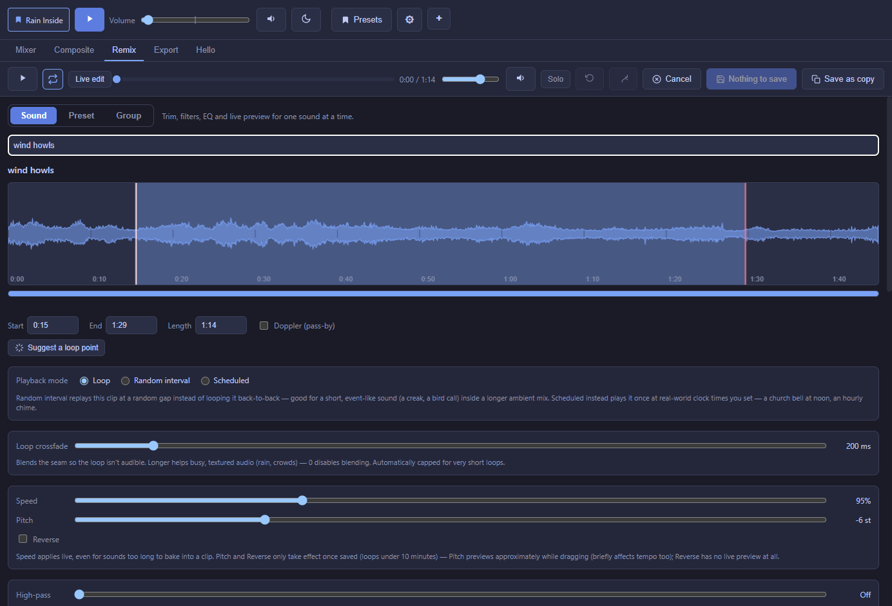

Remix — shaping a sound
Trim, filter, EQ, and control exactly how one sound plays, with instant live preview.

Open the Remix tab and pick a sound from the search box at the top. Everything below applies to that one sound; changes preview live as you drag, and nothing is written to your original file — Remix always renders a separate working copy, so your source audio is untouched.
Trim and seamless looping
The waveform shows the whole file. Drag the Start/End handles (or type exact times/a length) to pick the region that loops. A Suggest a loop point button analyzes the file's energy and proposes a region that should loop cleanly on its own, which you can still fine-tune.
The Loop crossfade slider blends the tail of the loop into its head so the seam isn't audible — higher helps busy/textured audio like rain or crowds; 0 disables blending for content that's already a clean loop.
Filters
Highpass / Lowpass / Gain
Cut low rumble (highpass), cut high hiss (lowpass), and adjust overall level (gain) — the three basics, always available.
7-band parametric EQ
Seven bands, each independently one of eight filter shapes (peaking, low shelf, high shelf, low pass, high pass, band pass, notch, or off). Drag a node to set frequency/gain, scroll over it to adjust Q, or use the precise numeric fields. A background shows roughly where the sound's own energy sits, and a live spectrum analyzer shows what's actually playing while you preview.
Echo & Reverb
Independent, stackable effects — use either, both, or neither. Reverb is real convolution reverb (not a delay dressed up as one), with Size and Mix controls.
Noise gate
Quiets a sound whenever it drops below a threshold you set — useful for cutting a hissy or rumbly noise floor in the gaps between events on a self-recorded or otherwise noisy clip. Threshold, Reduction, Attack, and Release controls; off by default.
Noise reduction
For a steady background noise — tape hiss, mains hum, an air conditioner — that's present even under the sound you actually want (the noise gate only handles the quiet gaps, this handles noise that's there constantly). Mark a stretch of the trimmed loop that's noise-only via "Noise from"/"Noise to" (or the one-click "Noise sample from loop start" button), set a strength, and save — Noctívago measures that stretch and subtracts its noise profile from the whole clip.
Doppler (pass-by effect)
Simulates a sound passing by: pitch rises approaching a "closest point" you can drag on the waveform, then falls away after it, with a Sharpness control for how gradual vs. sudden the effect feels.
Speed, Pitch, Reverse
Speed changes tempo and pitch together (like a tape machine); Pitch shifts pitch alone without changing length or timing; Reverse plays the clip backwards. Speed applies live even to sounds too long to fully bake; Pitch and Reverse only take effect once saved.
Fluctuation — slow random drift
Makes a looping sound's volume and/or pitch wander slowly and randomly over time — wind gusting stronger and weaker, rain swelling and fading — instead of sitting at one flat level forever. Set a lowest/highest/typical value, how many seconds between new targets, and how long each glide takes (or tick Fully random to roam the whole range with no shape at all).
Random Interval & Scheduled details
Both non-loop playback modes (see the Mixer page for the overview) share fade in/out handles right on the waveform, and their own pitch/volume/speed randomization ranges — "Fully random pitch" and "Fully random gap" checkboxes make that explicit rather than a magic 0 meaning something different.
Effect presets
One-click starting points for the filter section: Muffled, Over the Phone, On the Radio, Distant, Underwater, Echo, Reverb. They only touch the highpass/lowpass/gain/echo/reverb fields — your EQ, noise gate, noise reduction, and playback settings are left alone.
Undo, redo, and safety
Ctrl+Z / Ctrl+Shift+Z undo and redo your edits; a Cancel button discards everything since you opened the sound; leaving with unsaved changes prompts you first (with a "don't ask again" option). An A/B compare lets you snapshot the current EQ into a slot and flip back and forth while tuning.
Live edit vs. Saved audio
Most controls preview live as you drag. A couple (Doppler, Reverse, Noise reduction, and Pitch beyond a rough approximation) can't be previewed in real time — a toggle next to Play switches between the live approximation and the actual saved/baked file, once a save exists that matches your current settings.
What comes next
Sound Groups
The same filter/EQ tools, applied to several sounds sharing one bus instead of just one sound.
Export
Bake a whole mix — including every sound's Remix settings — down to one file.